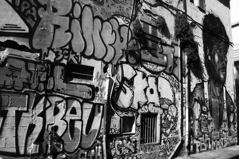

Vandalisme

Apa itu Vandalisme?
Vandalisme adalah perbuatan merusak dan menghancurkan hasil karya seni dan barang berharga lain ( keindahan alam dan sebagainya).
Faktor yang menyebabkan seseorang melakukan vandalisme:
- Karena mulai bosan hidup
- Pengaruh lingkungan sosial
- Memiliki masalah kejiwaan
- Tuntutan kelompok
- Berusaha mencari perhatian
Cara mencegah Vandalisme
- Membangun komunikasi dan pendekatan terhadap keluarga
- Mengembangkan kegiatan positif
- Mendengarkan pendapat dan keluh kesahnya